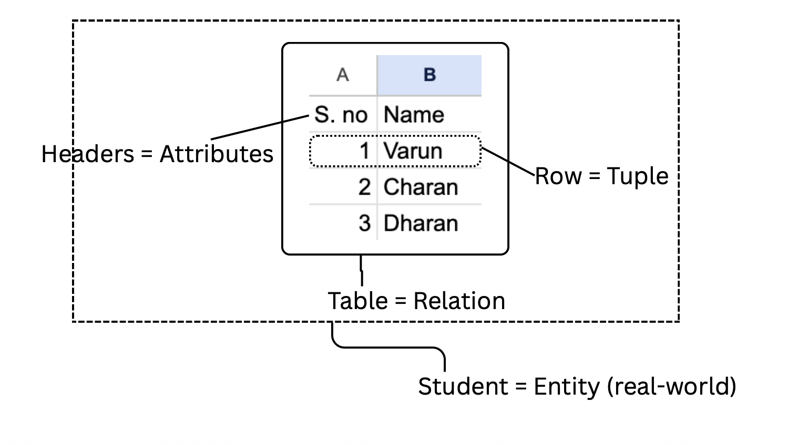

What exactly is a DBMS?
A Database Management System (DBMS) is dedicated software for managing databases.
As mentioned previously, the conceptual evolution from structs to tables
was natural and was brought forward by the popular relational model in 1970s.
What is relational model?
It's a model that represents data as relations (tables), with a mathematical foundation (set theory,
predicate logic) that lets you query declaratively.
The introduction showed us WHY these concepts exist. Here's the vocabulary we'll use going forward.
| Term | Meaning | Example |
|---|---|---|
| Table / Relation | Collection of related data | Employees |
| Row / Record / Tuple | One complete entry | E101, Rahul, HR |
| Column / Attribute | One property of data | EmployeeName |
| Primary Key | Uniquely identifies a row | EmpID |
| Foreign Key | References another table | DeptID |
| Schema | Structure of the database | Tables + Columns + Constraints |
| Constraint | Rule enforced on data | Salary > 0 |
| Index | Speeds up searching | Search EmpID quickly using B-Trees and Hashes. |
| Query | Request for data | Find all employees in HR |

As tables are also called relations, databases that store data using tables are called Relational Databases.
An Relational Database Management System (RDBMS) manages relational databases.
The most common language used to interact with an RDBMS is: SQL (Structured Query Language).
Popular SQL DBMS:
Please install MySQL locally using this article, and PostgreSQL using
this. Everyone has a preference on GUI vs Terminal based choice of
interface with DBMS, you can pick either.
GUI examples: MySQL Workbench, PostgreSQL PgAdmin.
Next: SQL command categories >>
Previous: Introduction <<